|
|
HOME
ABOUT WARFARE MAPS WELCOME RELIEF SPEECHES MEMORIAL VICTORY CAPUTRED LINKS STAMPS |
Protests to the War, and to the Protestors Despite broad support for the war, the removal of the threat of Saddam Hussein & the liberation of the Iraqi people, protests broke out in the United States & elsewhere. Many of these protests were organized & funded by leftist, marxist or radical Islamic organizations bent on the same limitations & destructions of freedom that drove Saddam Hussein. But the reaction to the protests was not what the protestors hoped for. Rather, in outrage, large protests in support of the coalition were held across America to counter the anti-war sentiment.
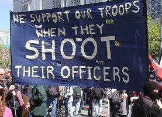 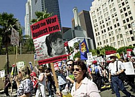 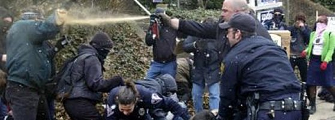 The anti-war protests reached a crescendo in the last week of March while coalition forces were being delayed by a large dust storm. They were perhaps epitomized by the outragous and despicable comments of one professor, a Dr. De Genova, from Columbia University at an anti-war "teach-in" held on that campus. At that meeting, the Professor publically stated that he wished that "1 million Mogadishu's" would befall U.S. forces in Iraq, and he urged service personnel to do the "real" patriotic thing and attack their own as the muslim Sgt. from the 101st had done when he killed two personnel in his own division in Kuwait the week before. These comments resulted in a fire storm of outrage at Professor De Genova and Columbia University for these seditious commnents that continue to this day. Outraged by the seditious and criminal nature of many of the protests, American citizens and lovers of liberty became active themselves in an unprecedented, prolonged show of support. Organizations like The FreeRepublic Network, conservative talk radio hosts like Glenn Beck and others, organized regular "Support the Troops", and "Support the War Effort" rallies all across the country that were held throughout the conflict. 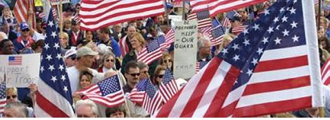 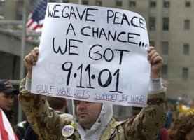 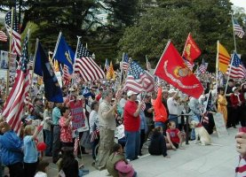 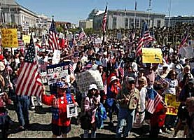 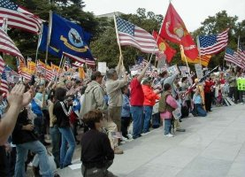 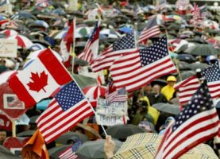 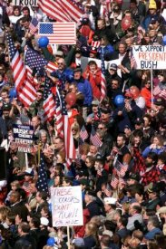 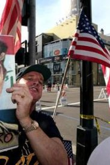 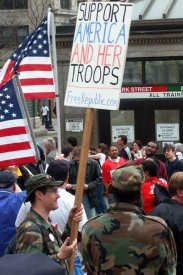 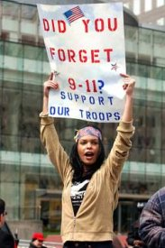 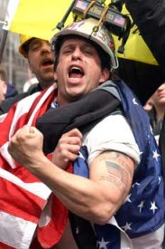 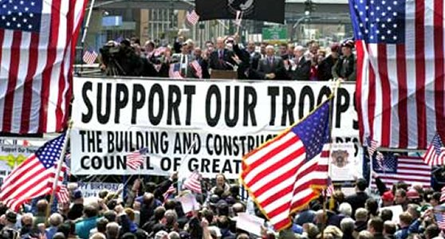 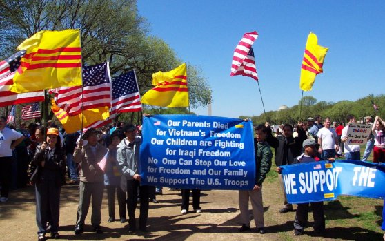 THE ULTIMATE COUNTER PROTEST - BY THE LIBERATED 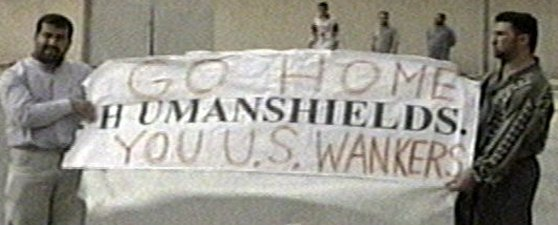 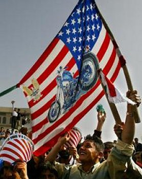
|

Sign Guestbook Copyright © 2003 by Jeff Head. All Rights Reserved. View Guestbook
Web Site by Just-Fix-It Web Services

free hit counter